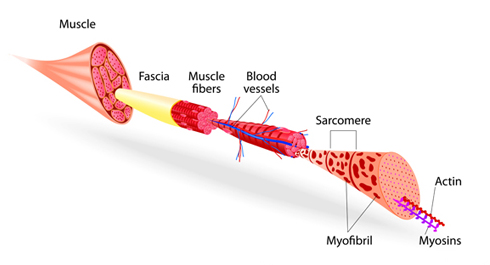
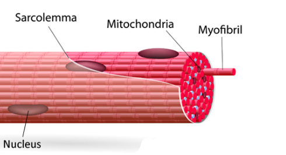

Previously, we have told you that our muscles consist of myofibrils (contractile elements) and mitochondria (energetic elements), and your strength directly depends on the first elements, while your endurance depends on the second ones. And here is a logical question arises – how to train these myofibrils and mitochondria? That’s a good, right and timely question, although we can’t give you a straightforward answer (because there is none), but we will tell you what area to look for.
Myofibril training

An important point which should be discussed in terms of myofibril training is that training mode should presuppose NO muscle relaxation. Usually you start and finish your exercise with the point when your muscle is relaxed, and in a new mode when the muscle is not relaxed you remove some part of amplitude, that is, you do the exercises in an incomplete amplitude, and your muscle experience exertion.
Firstly, intensity in muscle contractions (load intensity in one particular rep).The more intensive it is, the better it is. If looking at any exercise in terms of strength and endurance, then, in fact, any number of reps of more than one switches the muscle work from strength to endurance. Therefore, the less reps there are in the exercise, the harder the exercise is for you, the higher intensity it has. But here you should be very careful in selecting the exercises and the possible number of reps not to overload and not to get traumatized.
Secondly, the intensity of the exercise. An exercise can be different in intensity depending on the type of the exercise (push-ups and sprint will give different intensity) and on the tempo of execution of the exercise (push-ups could also be intensive). So, you have several options at hand.
Thirdly, duration of the exercise execution. The exercise should last TILL the moment when the muscles can’t contract any longer (because they have spent all available creatine). Here we can’t give you exact number of repetitions or exact duration time for one exercise. You should consider your own sensations and do the exercise till that moment.
Fourthly, the relaxation time between the sets. This rest time should be from 5 to 15 minutes. Here it is important to remember that rest should be active, that is you should move and provide the blood circulation in the body to clean the muscles from hydrogen ions. Then they will not negatively affect the muscles. Besides, active relaxation could decrease this negative affect many times in comparison with the passive relaxation (can last up to 60 minutes).
Fifthly, the number of sets. For developing training you should do 5-10 sets for one particular muscle. To identify the frequence of such developing training sessions, you should remember that myofibril is being build (it has 90% of the main muscle part) within 15 days (approximately) and continues its building (plus 10% of tendinous ends of the muscles) within the next 90 days!
Mitochondria training

In comparison with myofibrils, there are three main factors for the mitochondria to grow:
1. Amino acid in a cell
2. Oxygen in a cell (the more, the better)
3. No hydrogen ions (the less, the better)
Now let’s look at the workout parameters:
Firstly, intensity in muscle contractions and in an exercise. At anaerobic treshold.
Secondly, duration of the exercise execution. From 2 to 30 minutes.
Thirdly, relaxation time. About 2 minutes.
Fourthly, the number of sets. The more, the better, up to 40 sets in one workout session. This can be limited by the amount of glycogen in a body. What is pleasant about this is that these sessions can be done every day.
Conclusion
At the end of this infopost, we would like to remind you one more time that all this information is given here to expand your outlook, and it is not supposed to be applied within our 100 Days Workout programm. Our program has other goals and other means to achieve them. What is more, we don’t try to develop mitochondria and myofibril in particular muscles, our goal is to improve the overall conditioning of the trainees, including the appropriate movements, developing the cardio-vascular, respiratory systems, movement coordination, having daily workout sessions in your routine life, etc.
Therefore, our program and the sessions you do within the program should not be evaluated upon in terms of today’s post.